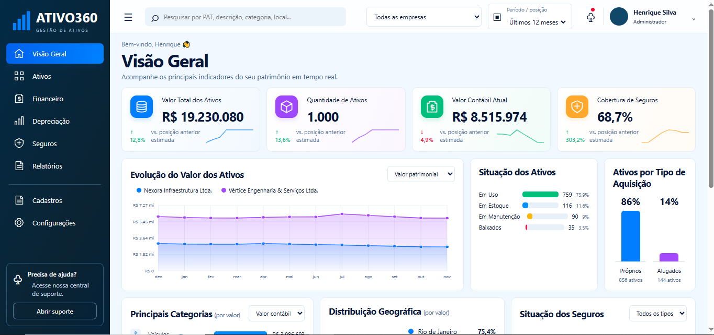

01 · ENGENHARIA MECÂNICA
Raciocínio técnico e analítico
Fundamentos técnicos e teóricos da engenharia, análise de sistemas, compreensão de equipamentos, processos, desempenho e resolução estruturada de problemas.
Conecto visão técnica, gestão administrativa e tecnologia para estruturar processos, desenvolver controles e transformar informações em decisões melhores.
Engenheiro Mecânico com experiência em gestão de contratos, patrimônio e operações administrativas. Perfil analítico, facilidade para aprender novas ferramentas e iniciativa para desenvolver soluções digitais.
Minha trajetória profissional é construída na integração entre conhecimento técnico, gestão administrativa e melhoria contínua. Minha formação em Engenharia Mecânica desenvolveu uma base sólida de conhecimentos técnicos e teóricos, raciocínio lógico, capacidade de análise e compreensão de sistemas. Na prática corporativa, aplico essa visão à gestão de contratos, controle patrimonial, organização de operações e acompanhamento de indicadores.
A Engenharia Mecânica amplia minha capacidade de compreender processos de forma estruturada, avaliar cenários, interpretar informações técnicas e conectar necessidades operacionais a soluções viáveis.
Fundamentos técnicos e teóricos da engenharia, análise de sistemas, compreensão de equipamentos, processos, desempenho e resolução estruturada de problemas.
Ampliação de conhecimentos em segurança ocupacional, prevenção de riscos e melhoria das condições de trabalho, conectando segurança e eficiência operacional.
Formação prática pelo SENAI na leitura, interpretação e desenvolvimento de desenhos técnicos e especificações mecânicas.
Acompanhamento de contratos, documentação, certidões, fornecedores, prazos, custos, obrigações e controles administrativos.
Controle de ativos imobilizados, inventário, movimentações, documentação, seguros e acompanhamento patrimonial.
Estruturação e leitura de informações gerenciais, acompanhamento de indicadores e visualização de dados para apoiar decisões.
Organização de rotinas, suporte às áreas, controles internos, viagens, rateios e processos corporativos.
Facilidade de adaptação a sistemas, exploração de recursos tecnológicos e aprendizado rápido de novas plataformas.
Identificação de oportunidades, estruturação de controles e desenvolvimento de soluções práticas para aumentar eficiência.
Boa capacidade de leitura técnica, compreensão de documentações, sistemas e comunicação corporativa.
Compreensão leitora e comunicação funcional para ambientes corporativos e relacionamento profissional.
Plataforma web idealizada e desenvolvida para apoiar a gestão de ativos imobilizados. O sistema reúne informações patrimoniais em um ambiente centralizado e apresenta dashboards para acompanhamento de indicadores, situação dos ativos, valores contábeis, categorias, aquisição e seguros.

Atuação na supervisão de rotinas administrativas e acompanhamento de processos relacionados à gestão de contratos, documentação de fornecedores, certidões, patrimônio e ativos imobilizados.
Atuação em processos administrativos, controles contratuais, organização documental, acompanhamento de fornecedores e rotinas de gestão patrimonial.
Vivência em ambiente corporativo e apoio às rotinas administrativas, desenvolvendo organização e familiaridade com processos empresariais.
Formação superior com base técnica em engenharia, análise de sistemas, processos e equipamentos.
Especialização voltada à prevenção de riscos, segurança ocupacional e ambientes de trabalho.
Curso técnico focado na leitura, interpretação e elaboração de projetos e desenhos mecânicos.